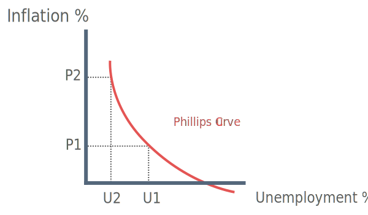

What is the Phillips Curve?
The Phillips curve is not a theory of inflation, however, it gives support to both Keynsian theories of inflation. In 1958 Bill Phillips recognised a short-run trade-off between unemployment and inflation.
In demand-pull theory, falling unemployment causes excess demand, which pulls up wages in the labour market. In cost-push theory, reduced unemployment means that trade union power is increased, allowing trade unions to exersize monopoly power to push for higher wages.

The Phillips curve, illustrated above, provides a solution to dealing with the conflict between inflation and unemployment.
Unemployment is initially at U1, inflation is at P1 and the economy is at point A on the Phillips curve
The government can increase aggregate demand to move the economy to point B
At point B, unemployment falls to U2 at the cost of higher inflation at P2
Therefore by using demand management policies the government can easily trade-off over time between the objectives of low employment and low inflation
Collapse of the Phillips relationship
The phillips curve relationship broke down in the 1970s with the onset of stagflation, where increasing unemployment was accompanied by rising inflation.
The advent of stagflation and the breakdown of the Phillips curve resulted in the development the second and third stages in the monetarist explanation of inflation.
Second Stage 1968 - Milton Friedman developed the theory of the expectations-augmented Phillips curve
Third Stage 1970s & 80s - New-classical school of monetarists explain inflation through the theory of rational expectations
Expectations-augmented Phillips Curve
The Expectations-augmented Phillips Curve factors in expectations of future inflation as a determinant of current inflation. Friedman accepted the initial Phillips curve as a short-run concept, but argued that in the long-run the Phillips curve should be drawn vertically.
Friedmans theory of the Expectations-augmented Phillips Curve can be summarised like this:
Short-run Phillips Curve
The short run Phillips Curve is drawn on the assumption of adaptive expectations. This idea assumes that if people experience higher inflation in their day-to-day lives they incorporate changes into their pay bargaining as thery expect higher inflation in future.
Long-run Phillips Curve
The LRPC intersects the short-run phillips curve where the rate of inflation is zero
The rate of unemployment at this point is known as the natural rate of unemployment (NRU)
Friedman argued that it is impossible to reduce unemployment below the NRU in the long-run, except at the cost of ever-accelerating inflation.
The diagram above is used to illustrate the concept of adaptive expectations and the natural rate of unemployment.
The economy is initially at point A where unemployment is 8% and inflation is at zero
If the government increases aggregate demand the economy moves to point B. Unemployment is now at 3% and inflation increases to 2%
In the short-run workers enter the labour market as they perceive an increase of 2% in nominal wages to be an increase in real wages (Money illusion)
Point B is unsustainable, as for workers to supply more labour, the real wage rate must rise. A rise in real wages causes employers to demand less labour
As a result the economy moves to point C on a new short-run phillips curve (SRPC 2) Unemployment also moves back to the natural rate of 8%
If the government were to pursue another round of expansionary policy the economy would move to point D and the previous cycle would take place again